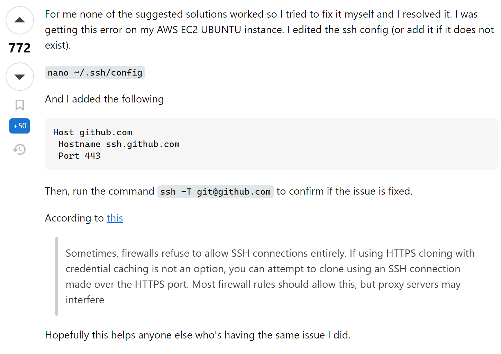

奖Hexo博客部署到Github上常常会遇到报错：
FATAL Something's wrong. Maybe you can find the solution here: https://hexo.io/docs/troubleshooting.html Error: Spawn failed at ChildProcess.
(E:_modules-deployer-git_modules-util.js:51:21) at ChildProcess.emit (node:events:514:28) at cp.emit (E:_modules-spawn.js:34:29) at ChildProcess._handle.onexit (node:internal/child_process:294:12)
网络上的一些解决办法时常失效，且治标不治本.
解决方法
是SSH密钥出现问题.
$ ssh -T git@github.com ssh: connect to host github.com port 22: Connection timed out
Stackoverflow 中最高赞方法实测可行.

其中，~/.ssh路径为C:\Users\username\.ssh，于其中新建文件config即可. 笔者采用的是CSDN中给出的文件内容.
此后在终端输入
1 | ssh -T git@github.com |
会有prompt，肯定即可.
$ ssh -T git@github.com The authenticity of host '[ssh.github.com]:443 ([20.205.243.160]:443)' can't be established. ED25519 key fingerprint is PUBLICKEY. This key is not known by any other names. Are you sure you want to continue connecting (yes/no/[fingerprint])? yes Warning: Permanently added '[ssh.github.com]:443' (ED25519) to the list of known hosts. Hi NAME! You've successfully authenticated, but GitHub does not provide shell access.
大功告成.